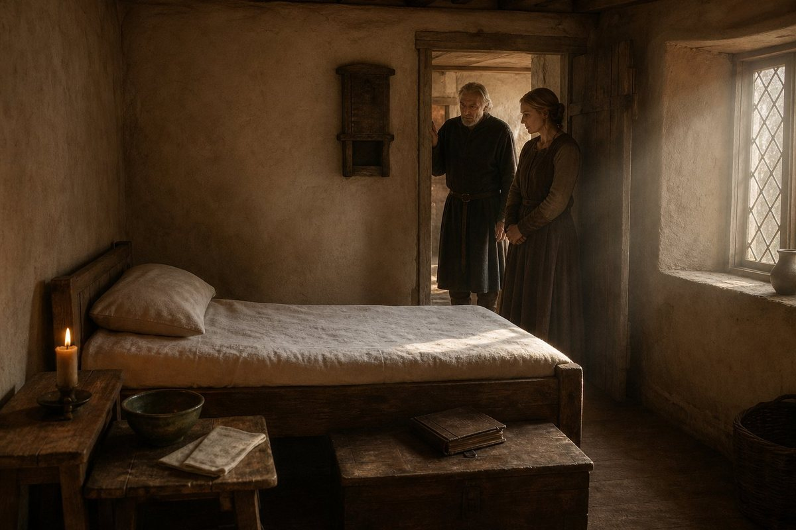
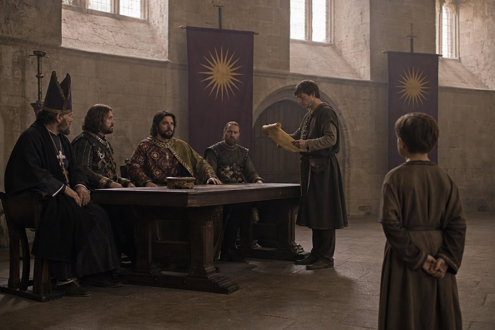
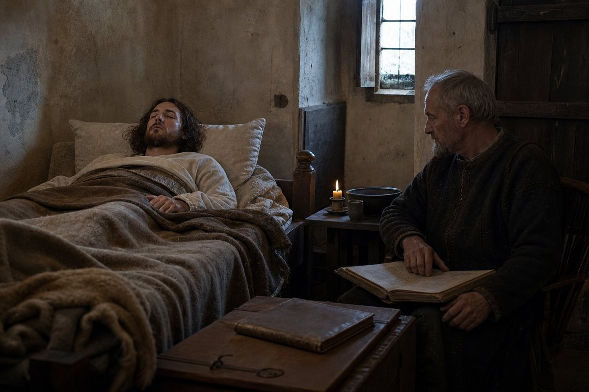
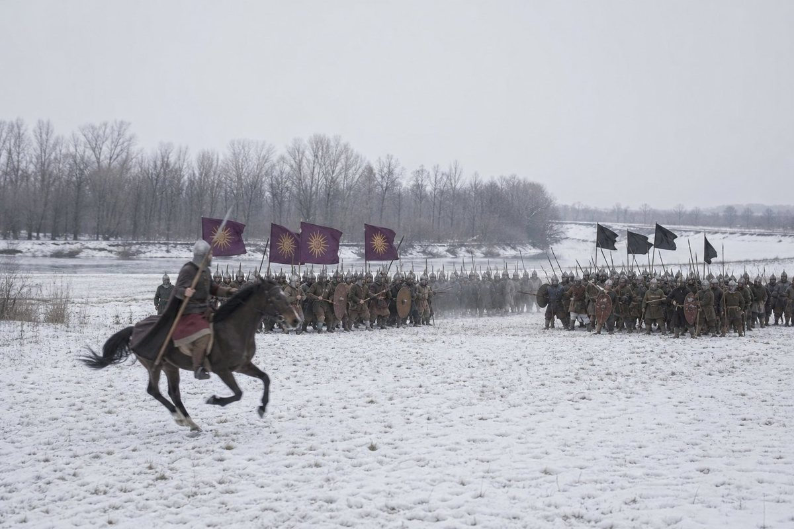
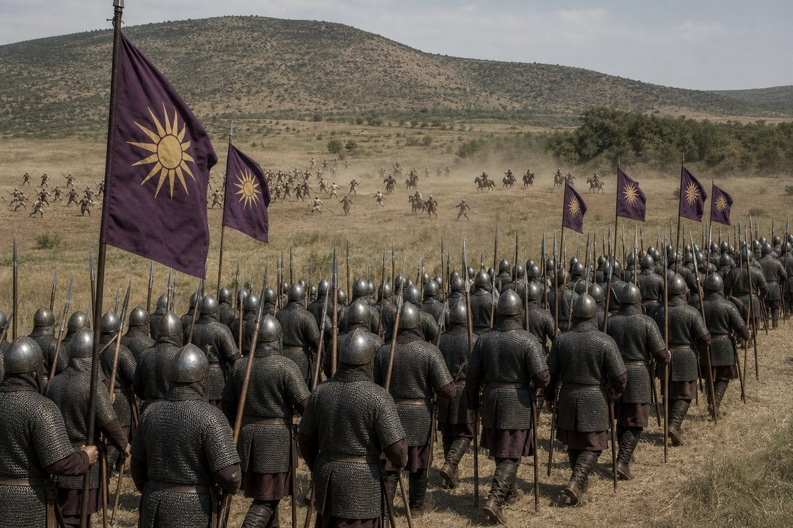
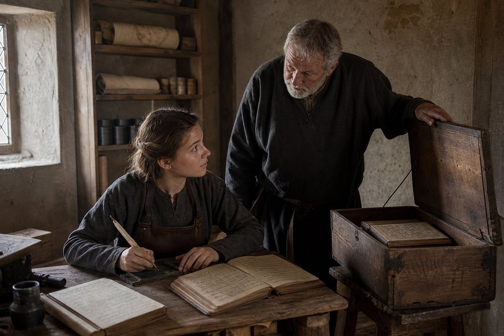
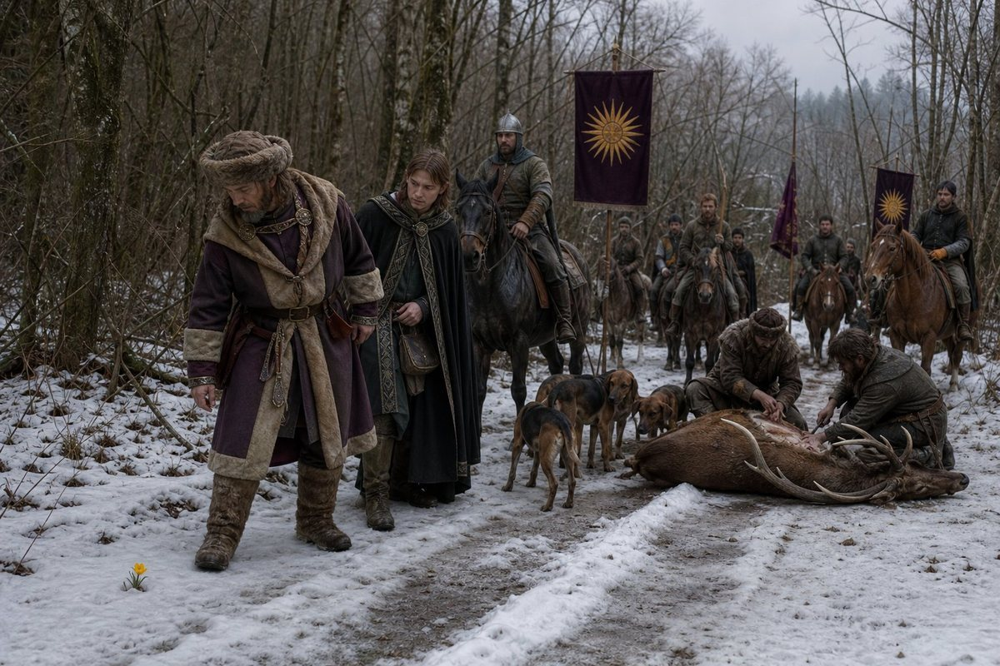
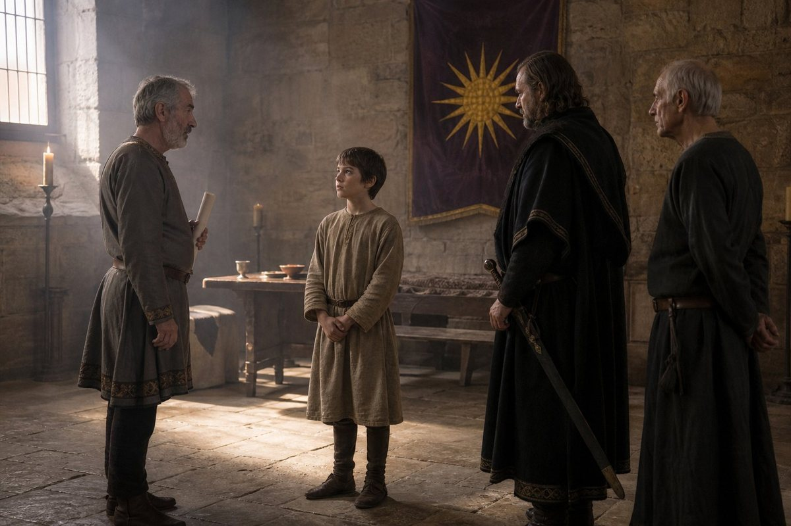
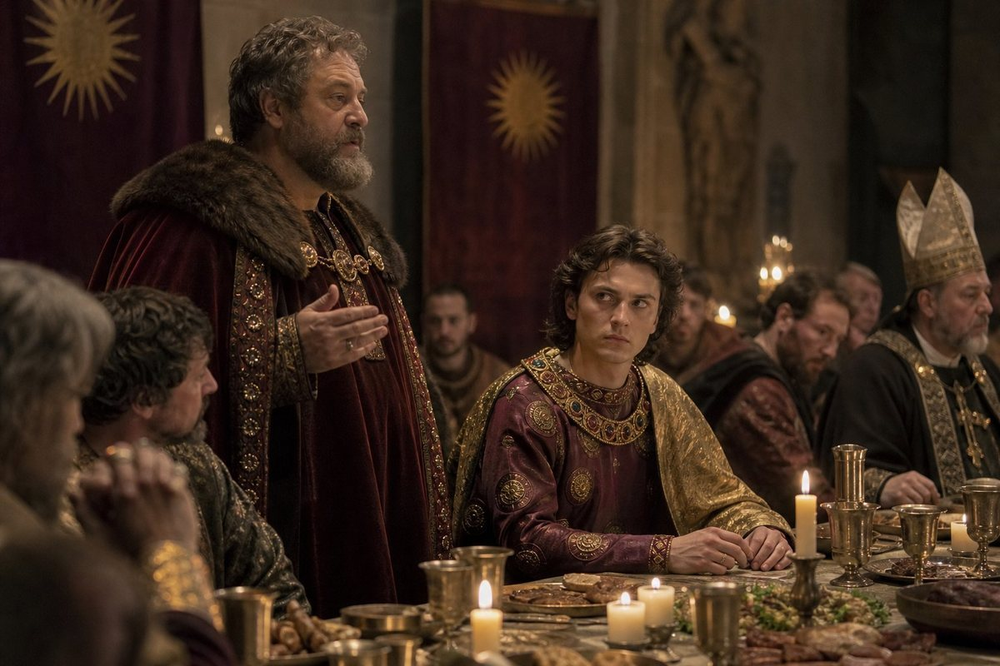

The fifth day of the ninth month
The sixth chapter of this volume ended in the eighth month of the year of grace 927, at Regensburg, on a boy of ten receiving two Moravian counties four days after a war ended, and it was a good place to stop and it left something out, and I am going to put it at the front of this one where it belongs.
On the fifth day of the ninth month of 927, three weeks after Jihlava and Znojmo were given to a child, Emiliya died.
The record's entry is short and I want to give it exactly: a death, a date, the word illness, and two words for the person — of the old company.
Silviya died on the ninth day of the ninth month of 926, of illness, of the old company. Emiliya died on the fifth day of the ninth month of 927, of illness, of the old company. A year and four days apart, in the same month of two consecutive years, and the same two words in front of their names. I have been reading this record for ten years and I do not believe it arranges these things to be cruel. It arranges them because it keeps a list of everyone, and when a list is long enough it does that by itself, and the cruelty is in the reader.
I never wrote her name once in five volumes until the day she died, and I am the man who writes the names. That is the first thing. The record has her in it eight or nine times before the fifth day of the ninth month of 927 and not one of those times is a thing she did; she is in the ledgers, in a list of the roll, on a page where four names are given to a castle. A woman who was in this company long enough to be called of the old company by a chancery that calls nothing old, and I cannot tell the reader what she looked like.
I am not going to invent her. I have done this once already in this volume, for Silviya, and I said then that I would rather leave a hole than fill it with something of mine, and the hole is the same shape. What I will say is what the phrase means, because the reader has now seen it twice in two years and will see it again before the book is done: of the old company is the record's way of saying that a person was here before the record was keeping names properly. It does not give the year. It will not tell me whether she came out of the north with us in 879 or joined in Greece in the nineties or was one of the women who came up the road after Hall. I will not supply a year, and I will not supply a woman to go with it.

The tenth day of the eleventh month
On the tenth day of the eleventh month of 927, nine weeks after that death and three weeks after the last of the Croatian counties were handed to a boy, the King of Bavaria declared war on Lower Bosnia, and the enemy of the war was a man called Pribunja.
This is the third of the four wars of conquest of this reign. Hesse was a county the crown had claimed for sixty years and fought four wars over. Croatia was a country next to his with its own church and its own language, and it took two years and fourteen hundred and eighty-five men. Lower Bosnia is a country of hills and rivers and it has a direction in its name, which is the sort of name a chancery gives a piece of land it does not intend to describe.
And the enemy is ten years old.
Pribunja was born on the eighth day of the twelfth month of 917. He was the heir of Lower Bosnia in the record's word, and he was ten years and eleven months old on the day the King of Bavaria declared war on him.

There was a Pribunja in this book before him and I have to be careful here, because this book has been bitten by names and I have done some of the biting. That man was born in 850. He was a lord of the Hungarian country with a name that men in three kingdoms knew, and in 906 he hired five thousand two hundred men out of his own treasury and brought them over the water at Hall on the seventeenth day of the eleventh month to save his daughter's crown, and we destroyed his army in an afternoon and he got away. He died on the tenth day of the third month of 922, an old man, four years before this boy was given his name in a font.
The record calls the boy his namesake heir and stops there. Whether he is a son or a grandson or a nephew or the son of a cousin, the record does not say, and a man born in 850 can father a child in 917 and be sixty-seven when he does it, and I could do that arithmetic and put a family tree in the middle of a page and be wrong. I am not going to do it. What I will say is the only thing the record will support: the boy was born in the twelfth month of 917, the old man died in the third month of 922, and so the old man was alive for the first four years of the boy's life, and if the record means what namesake heir usually means then the old man saw him and knew what he was for.
I have written two wars in this volume in which the enemy had a king with a court and a chancery and a treasury. Lower Bosnia has a boy and a regency the record does not name and four hundred and twenty-nine men in the field in the first month of 928. A war against a child is not a war, and I am going to write it as what it is: the King of Bavaria spent fourteen months and seventy men taking a country from a schoolboy, and got it, and it is the cheapest thing this crown has done since it started counting.
The twelfth month, and the King in a bed
In the twelfth month of 927 the King fell ill, and he was ill through the first month of 928 and the second, and on the first day of the third month he was not.
That is the whole of it. The record gives me a window of three winter months and the word ill, and it does not give me the illness, or the place, or a physician, or a crisis, or a day on which anybody thought he would die. I have written about a king of this house in a bed before: the old King spent a year in one in 911, coughing blood, being fed eggs by a smith, and lost nothing by it, and I wrote then that a year of a king's life goes by in the record as four counties and a prisoner. I did not think I would need that sentence again in this volume and I need it in the first winter of the third conquest.

He was twenty-five when the war was declared and twenty-five at the start of it, and the war went on without him, and the record does not even mark the difference, because a record that keeps battles does not need a king to be standing up.
What I know about this man's illnesses is that he had one great one, in the fifth month of 919, when the smallpox took him and the marks of it, and that the record calls what happened after it a miracle, and that I was in the room and have written what I saw and been disbelieved for it. I am not going to make this winter into a second one. This was a fever or a flux or a bad chest in a cold season, and the King of Bavaria was twenty-five and strong and it went off him in three months, and the only thing that matters about it is that the first battle of the war was fought while it had him.
Bihać, the thirtieth day of the first month
On the thirtieth day of the first month of 928 the army fought at Bihać: one thousand four hundred and six of ours against four hundred and twenty-nine of Pribunja's, fifty-six of ours killed and two hundred and ninety of his.
It is Bihać again. On the first day of the first month of 926 — two years and twenty-nine days earlier — two thousand and fifty of ours fought one thousand and seventy-nine of Bartol's there, and killed three hundred and five of them, and lost two hundred and seven, and on that same day the chancery inked the words Aggressive Attacker beside this King's name. I wrote that page in the sixth chapter of this volume.

Two years later the same town, a third fewer men on our side and a quarter of the enemy we faced the first time, and the same result. I do not know what is at Bihać. It is a town on a river in the country between Croatia and Bohemia with a castle above it and a road through it, and this crown has now fought two battles in it in two winters, and I have never seen it, and neither has the King, who was in a bed in the first month of 928.
Fifty-six of ours. One man in twenty-five, against an enemy that lost two thirds of his army. Whoever commanded there did what was needed and did it cheaply, and the record does not say who he was. It is the fifth time in this volume I have written that sentence: the wars are declared in the King's name and won by men the record will not name, and the only man in this book who has ever been angry about it is me.
Five months of nothing
The record does not have a battle between the thirtieth day of the first month of 928 and the twenty-third day of the sixth month of it. Five months. In a war. In a country of hills with a castle or two in it.
I want to set that down plainly because a reader of a chronicle gets into the habit of thinking that the gaps are where nothing happened, and the gaps are exactly where the sieges, the burning of villages, the riding of the country and the hanging of the men who had promised and changed their minds went. The record keeps two things in a war: the armies that meet in the open and the counties that change hands at the end. Everything that a war is actually made of is in the five months, and it is not in the record, and I will not write it out of my own head and call it history.
What I can say is that it took five months and ended in June, and that the second battle was as one-sided as a battle can be.
Kuclat, the twenty-third day of the sixth month
On the twenty-third day of the sixth month of 928 the army fought at Kuclat: one thousand three hundred and forty-seven of ours against a hundred and eighty-eight of Pribunja's, and fourteen of ours were killed.
And a hundred and eighty-eight of theirs.
All of them. There is no number on the other side of that because there is no other side: the record's line gives the enemy's army and the enemy's dead as the same figure, which is how it says a thing was destroyed rather than beaten. Fourteen of ours. One man in ninety-six.

I want the reader to hold two facts in one hand here. The first is that this King imprisons and does not execute; he has taken prisoners and has never executed one of them, and the book has said so before, and it is true, and it is one of the two or three things about him that I would put my hand on. The second is that a hundred and eighty-eight men died on a field at Kuclat and none of them was taken prisoner, because there was nobody left on that field to take.
Those two facts are not in contradiction, and I have thought about why they are not, and the answer is that a court is not a battle. What a king does with a man who has come into his hall and sworn and then not sworn is a matter of policy, and this King's policy is a tower and a man alive in it. What an army does to another army in a valley in June is not policy. It is arithmetic, and the arithmetic was fourteen against a hundred and eighty-eight, and I have written the number and I will not dress it.
What the war cost
Seventy of ours. Four hundred and seventy-eight of theirs. Two battles, five months apart, in the war that was declared against a child of ten.
In Croatia the crown lost fourteen hundred and eighty-five men in four battles and gained two counties and kept them. Here it has lost seventy men and the war is over and the county is the crown's, and I am writing this in the tenth month of 928 with the ledger in front of me.
I have been in this trade for thirty-one years and I know what a cheap war means. It does not mean a good one. A cheap war means the enemy could not put an army in the field: it means four hundred and twenty-nine men at Bihać and a hundred and eighty-eight at Kuclat and a country that was defended by the season and the hills and not by anybody's host. A realm that is taken that way is not taken at all in the sense that matters, because nothing in it has been beaten; it has only been entered, and it will have to be entered again by somebody in ten years.
That is my judgement and not the record's, and I mark it as mine, and the reader may take it or leave it.
Guntpolt, the nineteenth day of the seventh month
On the nineteenth day of the seventh month of 928 Guntpolt died.
I have nothing else. No company, no office, no county, no kin, no cause, no age. A name that appears in the record once, with a date on it, and then never again in five volumes and thirty-two chapters of keeping.
I have written three men of that kind already: Bartol, who commanded the Croatian army in three battles and has no country; Baldassarre the abbot, who argued with a king of nineteen; Euktemon, whom the record gives a name and a pledge and nothing else. A book that is honest about its own record has to stop for that kind of name and not be embarrassed by it, and I am not embarrassed, I am tired. There is a version of this history in which Guntpolt is a groom who died of a horse and it would be a better page and it would be a lie.
Vlastimir, the thirteenth day of the ninth month
On the thirteenth day of the ninth month of 928 Vlastimir died. The record calls him a former champion of the company, which is two words of office and one of ours.
He came to us at Vratsa in the twelfth month of 900, out of the Bulgarian country, not more than nineteen, and he could read. In a company that took every man who could stand, a man who could read was worth two and he knew it and he made the clerks' lives difficult for twenty-eight years.
On the third day of the third month of 907 he fought my Captain in the final of the tournament at Mâcon. He was thirty-one and he had never lost a duel in his life, and the Captain was fifty-seven, and it went the way the Captain's things went, and I have that page in this book already and I am not going to write it twice. What I want to put down here is the part I could not put on that page: he came out of it grinning. He had lost to the best man in Europe in front of the Burgundian court and it was the best day of his life and he said so at supper, and the Captain heard him say it and bought him a horse.
Adam is alive. Adam fought the Captain in the semi-final that same month and is a Giant in the record and sells nothing of it, and he is in the hall at Regensburg this winter, and I will not write his obituary until he gives me cause.
How Vlastimir died the record does not say. He was forty-seven. I am not going to give a man of my own company a battle to die in for the sake of a paragraph.
The first day of the tenth month
On the first day of the tenth month of 928 the King went out to the hunt, and the hunt ran to the first day of the second month of 929, which is four months.
The record does not say where. It says hunt and it gives me the four months and the two dates and it says that in the twelfth month there was a stag hunt in it, and that when the King came home on the first day of the second month the chancery had a new word for him. Four months of a king of twenty-six in the hills with dogs and horses and an escort, in the year after a war that cost him seventy men, and no page of it in the record except the shape of the season.
I did not go. I have a hip that has been bad since the eighth month of 926 and a chest of books and a ledger, and the last time I went anywhere on a horse for the crown's business I wrote the worst chapter in this book off a letter in a yard. The court went. I stayed at Regensburg in the room off the yard with the chest in it, and that is the second thing I want the reader to know before the next section, and the first is the date.
The twentieth day of the tenth month
I am seventy years old. I was born above the Gulf of Corinth in 858 and I came into this company in the eleventh month of 897, which is thirty-one years, and I have kept this ledger since the twenty-second day of the fifth month of 919, and I am in the room off the yard with the chest in it and the ledger open in front of me and I am not going to be able to finish this chapter.
Thirty-one years, and that is the number in the book. The chest's book has forty-five in it, from the eleventh month of 883, and the fifth volume I have been writing has me in the company since the eleventh month of 897, and I am going to keep the book's arithmetic and flag the difference here, because a ledger that silently changes its own arithmetic is a book nobody can check.
At Regensburg, on the twentieth day of the tenth month of the year of grace 928, in the hand of Laurentios of the company, born above the Gulf of Corinth in 858, who was not at Bihać in 926 and was not at Bihać in 928 and has the fifty-six and the two hundred and ninety from the record and nothing else, who was not at Kuclat in the sixth month and cannot tell the reader whether the King was there, and who was not on the hunt.
He signed it on the twentieth day of the tenth month of the year of grace 928, and he died on the twentieth day of the tenth month of the year of grace 928, in the room off the yard, with the chest in it and the ledger open at the page he had just finished, and the King of Bavaria was somewhere in the hills with dogs and did not know for eleven days.
Here the hand changes
I am Philostrate, and I was born at Regensburg on the thirty-first day of the eighth month of 912, and I am sixteen years old, and I am the King's sister.
I was not on the hunt either. I was in the same building as the chest, three rooms away, doing the work I do, which is the work of a household's accounts: the wine, the wax, the horses' feed, the wages of the men who stand at doors. Nobody in that building had a worse claim on this book than I did and nobody else asked for it.

Here is how it came to me, and the reader should know that this part is the book's and not the record's, because the record has no line for the passing of a ledger. The chest was sealed the day he died and the key went to the chancery, as it does; and the chancery sent to ask whether any of the King's kin could read the hand in it and finish the year, because the year was not finished and a chapter that stops on the twentieth day of the tenth month is a hole in a book. I could read the hand. I had been reading it for two years, out of the copy that comes to the household, because I am the kind of person who reads the ledger before the letter.
I am not going to pretend I was chosen for my prose. I asked. It was given to me because it was work, and because I am the King's sister and could not be refused, and because everybody else in that building has something better to do than write down what the chancery said on a Tuesday.
I have read the whole of it — not the fifth volume, I mean the whole of it, back to the beach — since the twenty-first day of the tenth month. I want to say what I found, because it is the only qualification I have. Four hands before mine, and every one of them wrote down what it could not know and said so: a smith's tallies, a Roman Greek's wars, a woman counting the dead of a smallpox, and a soldier in a room off a yard who signed his last page on the day he died. I am the fifth, and I am the first of this house to hold the pen, and I am going to keep their rule, which is: the record's numbers as they stand, my own judgement marked as mine, and the space where a thing is missing left open so that a reader can see the shape of the hole.
What I do not have is thirty-one years. I never saw the beach. I never saw Hall. I have never been further from this building than the hills behind it. What I have is the accounts, and the accounts are the only thing in this world I understand without being taught.
The stag hunt, the twelfth month
In the twelfth month of 928, somewhere the record does not name, there was a stag hunt, and the record says that Count Euktemon led it, and that Count Euktemon was scolded for looking at wildflowers.
That is the entry. That is the whole of the entry, and I have read it eleven times since the new year, and I would like to put beside it what I know about Euktemon, because Laurentios began it and did not finish it.

Euktemon was given Ansbach, Hohenlohe and Nördlingen on the twenty-second day of the ninth month of 911, when he was a man of no history, by a King of Bavaria who was in a bed in this building being fed eggs. He led the pledges of loyalty in the hall on the fifth day of the eleventh month of 920, one of five men who led, before twenty-five who came in and four who did not. And in the twenty-sixth chapter of this book Laurentios wrote that the record gave him a name and a pledge and nothing else, and that he would not invent him.
Eight years later the chancery writes that he led a stag hunt and was scolded for looking at wildflowers, and that is more of a man than the record gave us in seventeen years of counties and oaths.
My reading, and it is mine: a stag hunt is a court on horseback. Four months of it is four months in which every lord in the realm is either present or absent, and the man who leads it is the man the King wants seen leading it, and the man who is scolded in front of it is being told something in front of everybody. I do not know what the wildflowers had to do with it. It might have been nothing but a bad moment and cross dogs, and it might have been a marcher lord of fifty being told to keep his eyes on the business. Both of those are in the sentence and neither is in the record, and I am not going to choose.
What I will say is that a man who looks at wildflowers in the middle of a stag hunt, and is written down for it by a chancery that has never once written down a flower, has got himself into the record for the only thing about him that a stranger would want to know.
The twentieth day of the twelfth month
On the twentieth day of the twelfth month of 928 Pribunja was imprisoned, and Krajina was given to Thearidas, and the realm reached ninety-seven counties.
The boy was eleven. He was born on the eighth day of the twelfth month of 917, so he had been eleven for twelve days, and he was taken in the twelfth month of the second winter of a war that had been made on him when he was ten. I am sixteen. I have done the subtraction four times and it does not get better.

I am not going to write the taking of him. I was not there and the record has one line and I do not know whether he was taken in a hall or a castle or on a road, or whether there was a fight, or whether the men who held him for eleven months were the men who gave him up. What I will write is the sentence after it, which is a county changing hands, because that is what the record thought the important half was, and it is.
Krajina, the county, to Thearidas, of the company. Ninety-seven.
Thearidas is in the record for the first time on the twentieth day of the twelfth month of 928 and the record calls him of the company, which is the phrase it gave Silviya and Emiliya and the phrase it uses for the men who came out of the north. So I went to the ledger. Laurentios kept the roll himself for the last nine years and I have it in front of me now, and Thearidas is not in it. Not in the roll, not in the wages, not in the chest's book, not once between the twenty-second day of the fifth month of 919 and the twentieth day of the tenth month of 928.
I could write four reasons why a man's name is not in a ledger and one of them is that he was in another house's wages, and one is that he came in after the last page, and one is that somebody wrote his name down wrongly, and one is that the phrase of the company in this record does not mean what I think it means. I do not know which, and I am the fifth hand and I am not going to spend my first page on a guess. I write it here so that the reader has it: the crown gave a county to a man whose name is not in its own account of the men it pays.
That, more than the boy, is what I have inherited.
The twenty-fifth day of the twelfth month
On the twenty-fifth day of the twelfth month of 928, at the court that was with the hunt, Count Polydoros insulted the King.
The record now calls him Polydoros the Accursed. It calls him a Torturer. It says he is an adulterer and that he has the lover's pox, and those are a chancery's words and not mine and I am putting them down as the record's.

The words of the insult are not in the record, and I am not going to write them, and I want to say why, because this is the first page of my hand and the reader is entitled to know a rule when he sees one. There is a man in this book who married the Countess Noushin on the first day of the ninth month of 910, and to whom the crown gave Plzeň in Bohemia on the fourth day of it; and in the eleventh month of that same year the King of Bavaria travelled for eleven days on the road home in that woman's company and the record says they bonded over the journey. That is all in the book already, in the twenty-first chapter, and it is all true and it is nothing.
It would be the easiest thing in the world to write that a man stood up in a hall eighteen years later and said something about his wife and a king, and every reader would believe it, and it would explain the epithet, and it would be a lie I had made up in a room. The record does not connect them. The record never connects an insult to a cause; it gives the words Torturer and adulterer to a chancery and the pox to a physician and stops. I am not going to join two pages of a record because they fit.
What the record does say is what was done about it, and that is the part I want the reader to keep: nothing. No prison, no fine, no forfeit, no exile, and no battle. He insulted the King of Bavaria at his own Christmas court and the King of Bavaria, who had taken five lords into a tower in eight years and never killed one of them, did not even take him into a tower.
The twenty-sixth day of the first month
On the twenty-sixth day of the first month of 929 Iancu died, a former champion of the company.
There are two men called Iancu in this record and I am not going to join them, and I want to be quick about why, because Laurentios would have known and I do not.
The first Iancu came into the company at Câmpulung in the third month of 884, one of four Vlachs out of that country who came to the camp within a fortnight of a battle we had won and wanted to be on the side that won.
The second Iancu had three hundred and sixteen men under him at Oblucița in the seventh month of 902, and the company fought him for Margaréta over Székelyföld, and lost two of ours doing it.
The record calls the man who died on the twenty-sixth day of the first month of 929 a former champion of the company, which means the company's, which means the first one. But a champion in 929 would be a man in his sixties and I cannot find an age, and the book has been bitten by two Petres and one Andreas and it does not need a third bite. The first one is the one the words point at. I will write no more than the words.
The first day of the second month
On the first day of the second month of 929 the King came home from the hunt, and the record gives him a new word: Hunter.
That is the fifth volume. It opened on the first day of the seventh month of 920, in a hall in Regensburg, with a boy of eighteen taking a chair while his father's body was three weeks cold and twenty-nine men deciding whether to come in. It closes here, on the first day of the second month of 929, with a man of twenty-six coming home from four months in the hills with dogs, and a book in a chest that has had five hands in it, and ninety-seven counties.
The record's own return for the fifteenth day of the eighth month of 922, in the third chapter of this volume, was eighty-eight counties and the eighth largest realm of six hundred and thirty-three. Ninety-seven now. Nine counties in six and a half years, of which five were bought in Hesse in a single autumn and two were kept out of Croatia at the price of fourteen hundred and eighty-five men.
I have been asked by nobody to sum up a volume and I am going to do it, because I have read all of it and because the man who should have done it signed his page on the day he died.
The first subject of this volume was the old world dying. Germano died at Rome in the tenth month of 923, excommunicate, at sixty-one, in the week the King was at the Pope's door; Prijezda, who crowned him and led his pledges in a mitre, in the fourth month of 925; Silviya and Emiliya in the ninth months of 926 and 927; Vlastimir in the ninth month of 928; and Laurentios in the tenth month of it. Slavac is alive. He is sixty-three, and he was on the road to Rome in 908, and he is the last of it now besides the King, and I will write his death in this book because the record has it and it is not this volume's year.
The second subject was the rise of this man, and the record's words for him now are Conqueror and Aggressive Attacker and August and Mystic and Prolific Pilgrim and Hunter and Confider, and he is twenty-six, and his father at twenty-six was a captain of a company with a hundred and nine men and a wolf at the door.
The third was the rebellion, and it is not over. There were three Chalcedonian risings in the years this book has covered — Heilwich's in 908, Willichin's in 921, Dietrich's in 923 — and a peasant war that began on the tenth day of the first month of 921 and ran four hundred and fifty days, and in between it killed the King's brother of thirteen on the twenty-second day of the tenth month of 921, and its leader Svetozár was taken and died in his cell on the twentieth day of the second month of 924. The men who refused the pledges of 920 are Bohodar, a gracious host in Hungary in 927; Adalhard, who will hold Trier by 932; Ludwig the Black, who is alive in 929 and will die a disgraced count in 931; and Wilbert, who the record has given nothing and the book gives nothing.
The fourth subject is the precarious kingdom, and this is the one that a volume should end on and it is the one I am least qualified to write and I am going to write it anyway, because I am the fifth hand and this is what I see.
Ninety-seven counties. A border with the Roman empire since the first day of the third month of 926. A church that has not changed its mind and three risings to prove it. Counties in the hands of children: two Moravian ones to a boy of ten in the seventh month of 927; a county named Krajina to a man who is not in the ledger. An army that lost nine hundred and ninety-nine men in one December and another army three months later that won outnumbered by a thousand. A war in Croatia for two counties and fourteen hundred and eighty-five dead, and a war in Lower Bosnia for one county and seventy, and the second of those was made on a schoolboy. A treasury I cannot see. A Queen, Dusica, who has borne three children in three and a half years, two of them while her husband was in Rome. A daughter of six who is called Sophe, and two more whose names are in the book and nothing else.
Does it hold? I do not know. I am sixteen and I have been in this building all my life, and the thing I can tell the reader that no earlier hand could is what it looks like from the inside of a household: it does not look like a kingdom at all. It looks like a family that has been given a very large estate and a set of obligations, and that is run on credit, favours, marriages, the memory of one dead king who could do everything, and the willingness of a great many people to come when they are called and be seen to come.
It has held. It will hold as long as the family keeps producing a man who can win a field and a woman who can keep an account. It is not a state. I have read about states. There is one two days east of us that has been in the same hands for six hundred years and keeps registers older than our dynasty, and its Emperor, Alexandros the Proud, has a hundred and seventeen counties and a road that the crown of Bavaria now sits at the end of.
Here ends the seventh chapter of the fifth volume and with it the fifth volume of this book, at Regensburg on the first day of the second month of the year of grace 929, in the hand of Philostrate, born in this building on the thirty-first day of the eighth month of 912, daughter of Edouinos the Pilgrim and of Raina his Queen, sister of Antiphates who is the King, sixteen years old, the first of this house to hold the pen and the fifth hand to hold it, who has written the last of this volume and read all of it, who has never been further from this building than the hills behind it, and who counted the pages first because counting is the only thing she is sure of.